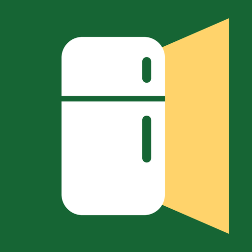
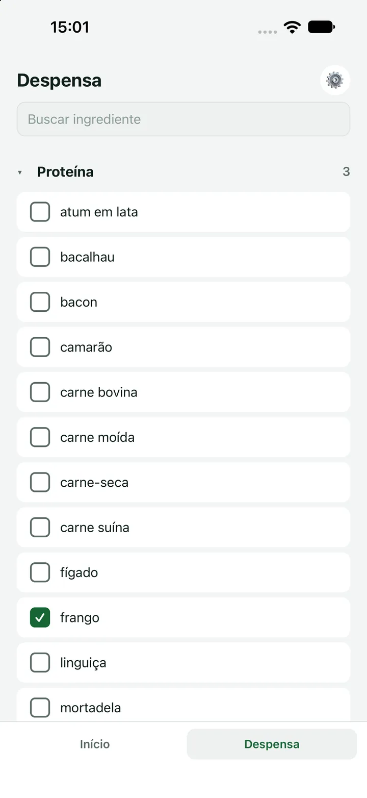
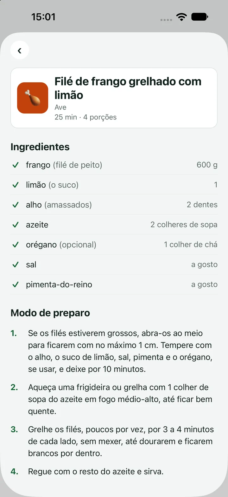

Tem na Geladeirarecipes from what you have at homerecetas con lo que tienes en casa
Marque o que tem em casa. Ele mostra o que dá para cozinhar.
300 receitas dentro do app, com despensa, favoritas e lista de compras. Nada é enviado para nós: não existe cadastro, login nem servidor, e as receitas abrem sem internet. Em teste fechado na Google Play (Brasil, Portugal e Irlanda) e no TestFlight.
Check off what you have at home. It shows what you can cook.
300 recipes inside the app, with a pantry, favourites and a shopping list. Nothing is sent to us: there is no sign-up, login or server, and recipes open without internet. In closed testing on Google Play (Brazil, Portugal and Ireland) and on TestFlight.
Marca lo que tienes en casa. Te muestra lo que puedes cocinar.
300 recetas dentro de la app, con despensa, favoritas y lista de compras. Nada se nos envía: no hay registro, ni inicio de sesión, ni servidor, y las recetas se abren sin internet. En pruebas cerradas en Google Play (Brasil, Portugal e Irlanda) y en TestFlight.

Como funciona.
Você diz uma vez o que tem. O app responde o que dá para cozinhar.
How it works.
You say once what you have. The app answers what you can cook.
Cómo funciona.
Dices una vez lo que tienes. La app responde lo que puedes cocinar.
-
Marque a despensa
Os ingredientes por categoria, com busca no topo e um filtro para ver só o que você marcou. A despensa fica guardada.
Check your pantry
Ingredients by category, with a search at the top and a filter to see only what you have checked. Your pantry stays saved.
Marca tu despensa
Los ingredientes por categoría, con búsqueda arriba y un filtro para ver solo lo que marcaste. La despensa queda guardada.
-
Abra e veja
O Início mostra o que dá para fazer agora e o que falta pouco, a um ou dois ingredientes de distância, dizendo quais. Com poucas receitas prontas, ele sugere o que comprar para liberar mais. Um botão mostra só as receitas de até 30 minutos.
Open and see
Home shows what you can make now and what is almost there, one or two ingredients away, naming which. With few recipes ready, it suggests what to buy to unlock more. A button shows only recipes of up to 30 minutes.
Abre y mira
El Inicio muestra lo que puedes hacer ahora y lo que falta poco, a uno o dos ingredientes de distancia, diciendo cuáles. Con pocas recetas listas, sugiere qué comprar para liberar más. Un botón muestra solo las recetas de hasta 30 minutos.
-
Ajuste em dois toques
No dia a dia, só o que mudou: “acabou” e “comprei”. Marcar “comprei” na lista de compras põe o ingrediente na despensa.
Adjust in two taps
Day to day, only what changed: “ran out” and “bought”. Marking “bought” on the shopping list puts the ingredient in your pantry.
Ajusta en dos toques
En el día a día, solo lo que cambió: «se acabó» y «compré». Marcar «compré» en la lista de compras pone el ingrediente en la despensa.
A receita inteira, com o que você tem e o que falta.
Os ingredientes, as quantidades, o modo de preparo, o tempo e o rendimento. Dali, você favorita a receita, muda as porções, com as quantidades recalculadas, e põe o que falta na lista de compras.
The whole recipe, with what you have and what is missing.
The ingredients, the quantities, the steps, the time and the yield. From there, you favourite the recipe, change the servings, with the quantities recalculated, and add what is missing to the shopping list.
La receta completa, con lo que tienes y lo que falta.
Los ingredientes, las cantidades, el modo de preparación, el tiempo y el rendimiento. Desde ahí, marcas la receta como favorita, cambias las porciones, con las cantidades recalculadas, y pones lo que falta en la lista de compras.

O que vem dentro.
Tudo funciona sem internet. O que está marcado como a caminho chega nos próximos builds de teste.
What comes inside.
Everything works without internet. What is marked as on the way comes in the next test builds.
Lo que viene dentro.
Todo funciona sin internet. Lo marcado como en camino llega en las próximas versiones de prueba.
- 300 receitas de comida de casa, em português, dentro do app300 home-cooking recipes, in Portuguese, inside the app300 recetas de comida casera, en portugués, dentro de la app
- Interface em português, inglês e espanhol, com os ingredientes e as unidades nos trêsInterface in Portuguese, English and Spanish, with ingredients and units in all threeInterfaz en portugués, inglés y español, con los ingredientes y las unidades en los tres
- Tema claro e escuroLight and dark themesTema claro y oscuro
- Favoritas, porções e lista de compras, que se compartilha como textoFavourites, servings and a shopping list you can share as textFavoritas, porciones y lista de compras, que se comparte como texto
- Backup da despensa, das favoritas, da lista e das preferências, num arquivo que vai só para onde você escolherBackup of your pantry, favourites, list and preferences, in a file that goes only where you chooseCopia de seguridad de la despensa, las favoritas, la lista y las preferencias, en un archivo que va solo a donde tú elijas
- 1.296 testes automatizados em 80 suítes, com CI no GitHub Actions1,296 automated tests in 80 suites, with CI on GitHub Actions1,296 pruebas automatizadas en 80 suites, con CI en GitHub Actions
- Auditoria de QA independente antes de cada versãoIndependent QA audit before every releaseAuditoría de QA independiente antes de cada versión
- Busca e filtros na aba Receitas: favoritas, até 30 min, fácil, restrição alimentar e cozinhaA caminhoSearch and filters in the Recipes tab: favourites, up to 30 min, easy, dietary restriction and cuisineOn the wayBúsqueda y filtros en la pestaña Recetas: favoritas, hasta 30 min, fácil, restricción alimentaria y cocinaEn camino
- Preferências alimentares: vegetariana, vegana, sem glúten e sem lactose, valendo no app todoA caminhoDietary preferences: vegetarian, vegan, gluten-free and lactose-free, applied across the appOn the wayPreferencias alimentarias: vegetariana, vegana, sin gluten y sin lactosa, en toda la appEn camino
- Modo cozinha: um passo por vez, com letra grande, a tela acesa e temporizadorA caminhoCooking mode: one step at a time, in large type, with the screen kept on and a timerOn the wayModo cocina: un paso a la vez, con letra grande, la pantalla encendida y temporizadorEn camino
A sua despensa nunca chega até nós.
Os ingredientes que você marca, as receitas favoritas, a lista de compras e as suas preferências ficam no seu telefone, e nós não temos acesso a nada disso.
Your pantry never reaches us.
The ingredients you mark, your favourite recipes, your shopping list and your preferences are stored on your phone, and we have no access to any of it.
Tu despensa nunca llega a nosotros.
Los ingredientes que marcas, las recetas favoritas, la lista de compras y tus preferencias se guardan en tu teléfono, y nosotros no tenemos acceso a nada de eso.
-
Sem conta e sem servidor
Não existe cadastro, login nem servidor nosso. Os dados só saem do aparelho pelo backup do sistema, para a sua própria conta, ou quando é você quem os manda.
No account, no server
There is no sign-up, no login and no server of ours. Data only leaves the device through the system backup, to your own account, or when you send it yourself.
Sin cuenta y sin servidor
No hay registro, inicio de sesión ni servidor nuestro. Los datos solo salen del dispositivo por la copia de seguridad del sistema, hacia tu propia cuenta, o cuando los envías tú.
-
Uma única função usa a internet
O relatório de erro, quando o app falha: sem nada da sua despensa e sem nenhum identificador seu. A chave fica em Configurações e pode ser desligada.
A single feature uses the internet
The error report, when the app fails: nothing from your pantry and no identifier of yours. The switch is in Settings and can be turned off.
Una única función usa internet
El informe de errores, cuando la aplicación falla: nada de tu despensa y ningún identificador tuyo. El interruptor está en Configuración y se puede desactivar.
-
Nenhuma permissão sensível
Sem câmera, fotos, localização, contatos nem notificações. A lista de compras compartilhada vai só para o app que você escolher. Sem anúncios e sem rastreamento.
No sensitive permissions
No camera, photos, location, contacts or notifications. A shared shopping list goes only to the app you choose. No ads, no tracking.
Ningún permiso sensible
Sin cámara, fotos, ubicación, contactos ni notificaciones. La lista de compras compartida va solo a la aplicación que elijas. Sin anuncios y sin rastreo.
Política de privacidade do Tem na Geladeira Tem na Geladeira privacy policy Política de privacidad de Tem na Geladeira
Participe do teste.
No Android, pela Google Play, no Brasil, em Portugal e na Irlanda. No iPhone, pelo TestFlight.
Join the test.
On Android, through Google Play, in Brazil, Portugal and Ireland. On iPhone, through TestFlight.
Participa en la prueba.
En Android, por Google Play, en Brasil, Portugal e Irlanda. En iPhone, por TestFlight.